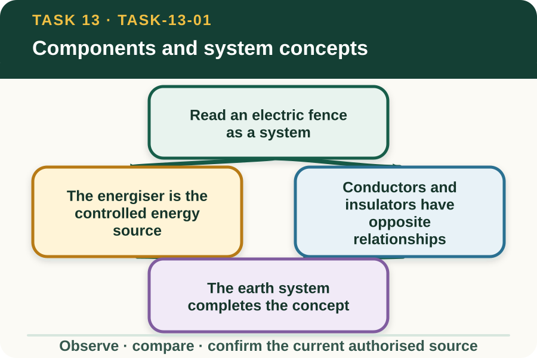
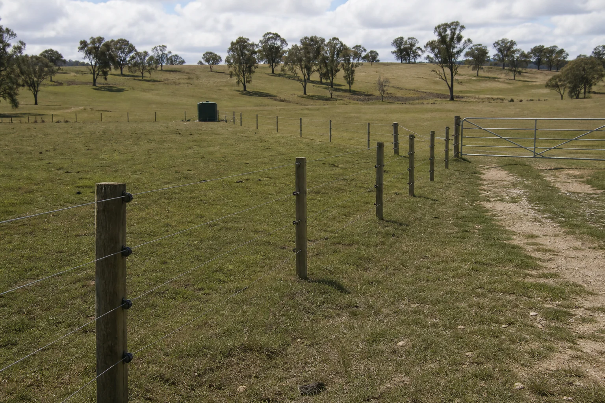

Learning purpose
Relate the energiser, conductors, insulators, earth system, gates and fence line without giving installation steps.
Task 13 · Lesson 1 of 4
Relate the energiser, conductors, insulators, earth system, gates and fence line without giving installation steps.
Learning purpose
Relate the energiser, conductors, insulators, earth system, gates and fence line without giving installation steps.
Success criteria
Learning boundary
Supplementary learning and formative practice only. Current RTO assessment, local procedures and authorised supervision control real work.

An electric fence works through relationships among the energiser, conductors, insulators, earth system, fence-line structures, gates, connections, signs and the surrounding environment. A change in one part can affect the performance or safety of the whole system.

This lesson uses conceptual diagrams only. The approved design, manufacturer information and authorised teacher demonstration control every real component choice, connection, placement and practical action.
The energiser supplies the pulsed electrical energy used by the system. Its suitability depends on the approved design, fence length and conditions, but a public learning site cannot select, connect or configure it.
A learner identifies its symbol and document reference in a fictional plan. Any missing model, power-source, condition or status information becomes a supervisor hold point rather than a generated recommendation.
Conductors provide the intended electrical path along the fence, while insulators separate that path from supporting structures and unintended contact. Damage, contamination or displacement can change the intended relationship.
The learner can recognise these component roles from a safe fictional diagram or authorised photograph. They do not touch, reposition or diagnose a real component through instructions from the site.
The earth system is an essential part of the designed electrical path, not simply a spare component beside the energiser. Soil and environmental conditions can influence system performance, which is why design and manufacturer requirements matter.
This conceptual explanation does not provide placement, connection, measurement or installation guidance. Those details are controlled practical information requiring the current approved source and supervision.
Fictional worked example
Observed evidence: A fictional classroom system diagram dated 4 September 2027 labels an energiser, three conductor segments, insulators, a gate assembly and an earth-system symbol. Segment C is shown touching a support directly, while the revision note says conceptual fault for discussion only. Decision and reason: Mei identifies that the intended conductor–insulator relationship is broken in the diagram but does not describe a repair or approach a real fence. Safe action: She marks the relationship conflict and asks which approved source defines the correct component arrangement. Result: The teacher opens the authorised manufacturer diagram for comparison. Next check or record: Mei updates her component map with the controlling source identifier and records that practical action remains supervised.
Gate areas and connection points must serve the system design while allowing the intended access and maintaining clear component relationships. They can also become points where damage, vegetation or movement changes the visible condition.
A plan review checks identifiers, purpose, surrounding access and document references. The learner does not create a gate connection, wiring diagram or physical sequence from the learning activity.
A relationship map names each component, its purpose, what it connects to, what it must remain separated from and which authorised source defines it. This supports fault reasoning without pretending the system can be judged from appearance alone.
Every real system has site-specific design, condition and authority. Website completion supports vocabulary and source use; it does not make a learner ready to work on an electric fence.
Formative practice
Each option explains the consequence. These answers save only on this device.
Written application
Apply and keep a learning record
Label the parts of a teacher-supplied fictional diagram, draw relationship arrows and flag one missing or conflicting source detail. Do not create connection or installation instructions.
Learning record: A supplementary-learning electric-fence system map with component roles and authority gaps.
Lesson responses and the activity are formative learning only. Formal sufficiency and competence remain with the current RTO process.
Source basis: AHCINF205 Release 1 basic electric-fence component and supervised-work context. The current approved design, manufacturer information, local procedures and teacher demonstration control all practical component decisions.